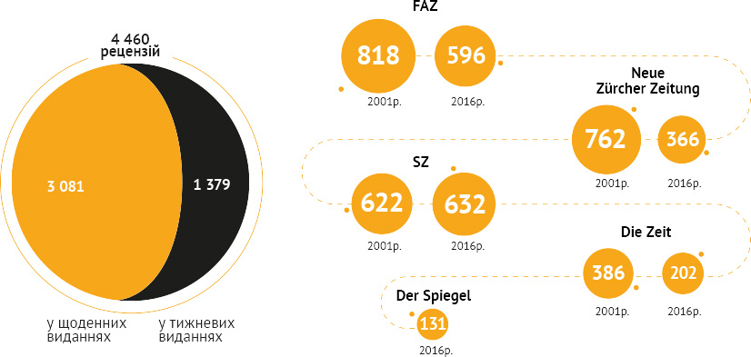
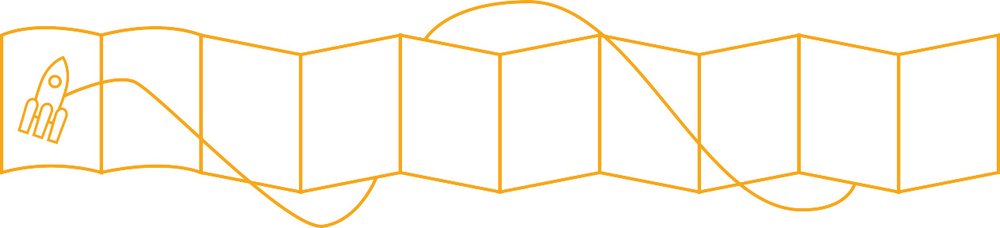
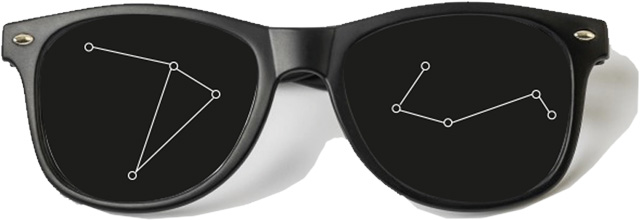

Літературна критика в Німеччині: витоки, виклики, висновки

Літературна критика в Німеччині: витоки, виклики, висновки
В останні роки українська літературна критика все частіше задає собі питання. Щоби не сказати, що чи не вперше за останні десятиліття вона почала себе запитувати про власну мету, цільову аудиторію, засоби артикуляції своїх меседжів. Критикам цікаво, якими мають бути (чи стати) їхні тексти в умовах постійно змінних видавничого ринку й читацьких запитів.
Виявилося, що ми мізерно мало знаємо про самих себе і, що не менш важливо – про інші літкритичні дискурси, зокрема європейських країн, ми знаємо не набагато більше. Ну, тобто, ми знаємо, звісно, що там є багаторічна традиція, стабільні ринки, попит читачів (читати як «все те, чого нема у нас, а все те, що у нас є, у них краще») – але цього явно недостатньо. А, можливо, саме таке «знайомство» допомогло б нам зрозуміти, куди і як нам рухатися – і під іншим кутом зору поглянути на те, що вже маємо і чого вже досягли.
«Під завісу» календарного року, 17 грудня 2017-го, київський офіс Goethe-Institut в Україні в межах заходу під назвою «Недільний Fachtag: семінар з літературної критики» надав українським критикам і критикиням можливість поспілкуватися зі своїм німецьким колегою – вільним експертом Крістофом Шрьодером. Зустріч почалася з розгорнутого екскурсу в стан сучасної німецької літературної критики, її історію та умови розвитку, а далі проходила в форматі загального обговорення питань, які для пана Шрьодера підготували представники та представниці українського літкритичного фахового середовища. Читомо теж опинилися серед її інсайдерів і підготували звіт із цієї події.
«Єдиний фронт» літератури й критики
Літературна критика в Німеччині після Другої світової війни (з 1949 року, з моменту створення ФРН), зазначив Крістоф Шрьодер, почала розвиватися на диво стрімко. Зокрема, цей розвиток пришвидшило створення так званої «Групи 47», що склалася з молодих письменників, включно з тими, які повернулися з екзилу – представники групи ставили перед собою доволі амбітні цілі, прагнучи повністю реформувати літературний процес у Німеччині.
Одним із учасників групи став літературний критик Марсель Райх-Раніцкі, майбутній «батько» нової німецької літературної критики – відповідно, критика вже тоді буквально опинилася «поруч» із літературою. Цей тісний професійний та особистісний зв’язок між літературними критиками та письменниками є однією з найбільш визначальних рис літкритичного дискурсу в Німеччині й донині. Нічого не нагадує? Втім, ця взаємодія в культурному просторі Німеччини точно не набула рис панібратства чи кумівства – а саме цим дорікали свого часу надмірно тісному спілкуванню літкритиків із письменниками в Україні.
«Великі критики», маленькі письменники
Райх-Раніцкі став першим з-поміж критиків у Німеччині, хто досяг статусу «великого критика» – аж до 90-х років минулого століття кожен німецький критик-професіонал мріяв про цю саму «велич». І це не дивно: авторитетність і вагу думки «великого критика» в літературному середовищі Німеччини середини ХХ століття можна було порівняти хіба з тим ореолом слави й побожності, яким були оточені критики у вікторіанській Англії.
Рецензія могла стати п’єдесталом визнання або смертельним вироком для кар’єри письменника – власне, саме «великі критики» були «тими, хто робили письменників», і були цілком свідомі цієї своєї ролі. Ясна річ, перспектива неймовірно спокуслива – проте з кінця ХХ століття від такого бачення літературної критики та літературних критиків довелося почати відходити. Лишилися, втім, ті, хто й досі намагається гнатися за славою «батьків літкритики», проте нині це викликає хіба що іронічну посмішку як у письменників, так і в колег.
Більше книжок, менше рецензій
Видавничий ринок Німеччини надзвичайно динамічний. Щороку виходить близько 90 000 нових найменувань книжок, 30 000 з яких – белетристика (на німецькомовну художню літературу припадає приблизно половина цієї цифри). Проте ринок друкованих видань, включно з тими, де публікується літературна критика, в останні роки суттєво скоротився у зв’язку з поширенням незалежних онлайн-ресурсів із власним фінансуванням.
Зокрема, одним із найвідоміших літературних інтернет-порталів є Perlentaucher, де збираються та публікуються підбірки всіх рецензій, які вийшли на ту чи іншу книжку в друкованих та онлайн-виданнях по всій Німеччині. Це, втім, подобається не всім: популярний німецький тижневий Frankfurter Allgemeine Zeitung вже не один рік провадить судові процеси проти редакції Perlentaucher, вважаючи, що свою цільову аудиторію онлайн-видання здобуває коштом їхньої праці.
Скорочення ринку літературних медіа в Німеччині:
· FAZ (Frankfurter Allgemeine Zeitung): З 1998 наклад скоротився на 34% (сьогодні: 265 000)
· SZ (Süddeutsche Zeitung): З 1998 наклад скоротився на 11% (сьогодні : 368 000)
· Die Zeit: З 1998 наклад скоротився на 12% (сьогодні: 515 000)
За даними Інсбрукського газетного архіву (2017 рік) у 2016 році в Німеччині було опубліковано 4 460 рецензій, із них:
Зміни книжкового ринку
Попри велику кількість найменувань, книжковий ринок сучасної Німеччини доволі сконденсований. Основний прибуток видавництвам приносять знані імена та бестселери, молодим авторам «пробитися» на літературну сцену доволі складно. Важливе місце відводиться й літературним преміям – Німецькій (Deuscher Buchpreis) та премії Лейпцизького книжкового ярмарку: потрапляння книжки до короткого списку будь-якої з них – це десятки, а то й сотні тисяч проданих примірників. Сконденсованість ринку спричинила скрутні умови існування малих та незалежних видавництв – і, щоби втриматися на плаву, їм доводиться йти на рішучі й експериментальні кроки.
Літературний критик у сучасній Німеччині: який він, де його знайти, що його тривожить
Додаткові ролі: модератор, актор, супровідник
Попри велику кількість найменувань, книжковий ринок сучасної Німеччини доволі сконденсований. Основний прибуток видавництвам приносять знані імена та бестселери, молодим авторам «пробитися» на літературну сцену доволі складно. Важливе місце відводиться й літературним преміям – Німецькій (Deuscher Buchpreis) та премії Лейпцизького книжкового ярмарку: потрапляння книжки до короткого списку будь-якої з них – це десятки, а то й сотні тисяч проданих примірників. Сконденсованість ринку спричинила скрутні умови існування малих та незалежних видавництв – і, щоби втриматися на плаву, їм доводиться йти на рішучі й експериментальні кроки.
Мета: критикувати чи радити?
«Ось автор, із яким я провів десяток презентацій, зустрічався на безлічі заходів, а то й добре знайомий особисто. Якою має бути моя рецензія на його відверто не найкращий роман?». Ця проблема, наявна і в українському літкритичному просторі, в Німеччині загострюється принциповістю настанови на близькість літературної критики до літпроцесу. Хоче він того чи ні, критик мусить замислюватися над тим, який ефект справляє його рецензія безпосередньо на автора. А як на зауваження, так і на поради автори реагують по-різному.
Писати рецензії – дороге задоволення
Так, жити винятково з літературної критики неможливо навіть у Європі. Щоби літературна критика стала єдиним чи бодай основним способом заробляння грошей, критику слід читати по книжці й писати по матеріалу на день. Гонорари стають радше приємним бонусом, аніж самоціллю чи інструментом мотивації.
Брак дистанції та конфлікти інтересів між критиком та видавцем
Крістоф Шрьодер позиціює себе як вільний критик. Це означає, що він не прив’язується до жодного видавництва чи професійної редакції й може сам обирати, де публікувати свої матеріали. Це часто спричинює конфлікти: видавництва все ж іноді вдаються до спроб впливати на літературну критику. Пан Шрьодер навів приклад із власної літкритичної практики: після негативної рецензії на видання представники видавця спочатку вдалися до електронного листування зовсім нелітературного характеру, а потім і до судових позовів.
Менше часу на написання матеріалуДодаткові ролі: модератор, актор, супровідник
Літкритичний «цейтнот» спричинюється не лише бажанням написати якомога більше текстів і, відповідно, більше заробити. «Книжковий ринок надзвичайно динамічний, реагувати на новинки слід швидко, рецензії потрібні тут і зараз – а зовсім сутужно стає, коли згадуєш, що ще й незле прочитати книжку, яку рецензуєш», – жартує пан Шрьодер. Виходом із цієї ситуації не в останню чергу стає написання стислих рецензій замість лонгрідів, проте дуже часто в цей формат складно вмістити враження від книжки.
Німецька літературна критика в 2017 році
Критика критики: все ще – лише регулятивний і «канонотворчий» інструмент
Хай би як не хотілося того сучасним критикам, лаври «великих критиків» середини ХХ століття для них нині недосяжні. Серед видавців побутує думка, що позиції критики у впливі на продажі суттєво похитнулися. Проте регулятивна функція у неї все ще залишається: позитивні рецензії стають синонімом художньої вартісності книги та майстерності її автора, негативні ж із великою ймовірністю докладуться до того, що про видання дуже скоро всі забудуть. Втім, критика – це завжди щось більше, аніж просто перепустка до шкільних підручників чи списків літературних премій, а про це фахові критики у своєму прагненні впливати на літературний процес нерідко забувають.
Вага читацьких відгуків («дилетантських рецензій») та книжкових блогів зростає
В останні роки значного поширення набув формат читацького відгуку («дилетантської рецензії») – текстів, написаних не професійними критиками. Це відбувається, зокрема, і тому, що ці тексти здійснюють значно відчутніший вплив на продажі, аніж фахова критика (бо значно краще працюють саме як оцінний механізм стосовно книжки). Окрім того, рецензії-лонгріди, відзначив Крістоф Шрьодер, в сучасній Німеччині читають далеко не так охоче, як короткі – коштом цього, зокрема, Süddeutsche Zeitung вдалося зберегти кількість публікованих рецензій практично без змін, замінюючи об’ємні тексти стислими.
Розвиваються й книжкові блоги – їх у Німеччині існує понад кілька десятків (і це лише ті, що мають стабільну та численну аудиторію поціновувачів – декотрі з цих блогів стали культовими, а їхні творці зажили слави справжніх селебрітіз). Блогери демонструють далеко не меншу компетентність, аніж критики-фахівці, але, маючи значно більшу свободу на сторінках власних ресурсів, пишуть яскраві та свіжі матеріали, легше відходять від сталих традиційних правил, експериментують із форматами, залучають візуальний та музичний контент і в цьому, ясна річ, дають фору фаховій критиці, яка все ще місцями скочується у гонитву за авторитетом.
Ба більше: німецька літературна премія Об’єднання видавців та книготорговців, яка присуджується найкращому роману, включила до складу свого журі шістьох блогерів. Існує навіть думка, що блоги з часом цілковито витіснять професійну критику – і на тлі загальної кризи довіри німецьких читачів до «класичних» медіа такий сценарій також виглядає дуже навіть можливим. Проте навіть найбільш відомі й професійні блогери не заробляють своєю діяльністю. Все тримається здебільшого на особистому ентузіазмі. З аналогічною проблемою стикаються й редакції великих онлайн-видань: якщо контент стане платним, користувачі з великою ймовірністю просто підуть на інші ресурси.
Нові формати: інтерв’ю, портрети, хоумсторі, теле- та радіопрограми
Попри те, що високочола «професійна критика» дуже часто ставиться упереджено, а то й висловлює зневагу щодо таких «мейнстрімних» форматів, літературна журналістика вдається до них, і далеко не безуспішно. Наприклад, «Літературний квартет», телепрограма, заснована ще у 80-х роках минулого століття Марселем Райх-Раніцкі, досі лишається популярною та цікавою для глядачів у Німеччині. І нині тут далеко не лише література, а й кулінарія, і письменницький побут, і скандали-інтриги-розслідування – ну а чому б і ні?
Зростає також і важливість радіопрограм – «літературно-критичне» радіо різноманітне й присутнє як на великих центральних, так і на регіональних радіостанціях, а також на окремих каналах, присвячених культурі. Окрім того, наголосив пан Шрьодер, літературні радіопрограми дуже добре фінансуються, тому є непоганим шансом заробити для професіоналів від літкритики.
Класична, традиційна «професійна» критика залишається важливим орієнтиром для книготоргівлі, видавництв, авторів і, не в останню чергу, читачів
Попри численні нововведення та виклики в літературно-критичному професійному полі, фахові рецензії все ще лишаються потрібними – й не лише тому, що, як висловився Крістоф Шрьодер, в Німеччині досі є чимало «старомодних людей, які люблять почитати паперову газету за вранішньою кавою». І хоча прямий вплив рецензій на продажі останніми роками значно скоротився, видавці цінують рецензії насамперед як каталізатори резонансу та ефекту від книжок. Позаду й часи, коли одна негативна рецензія могла звести нанівець кар’єру письменника, однак автори також враховують думку фахових критиків і цікавляться нею.
Семінар із літературної критики в Goethe-Institut зібрав учасниць та учасників із безліччю різноспрямованих інтересів у цій царині. Культурні журналісти, блогери, дитячі письменники, перекладачі й просто «вільні критики» – за чим би кожен і кожна з них не прийшли на цю зустріч, одне з найголовніших усвідомлень було, напевно, для всіх спільним. Прогресивна Європа – не так уже й далеко від нас, ми не такі вже й «відсталі» й наша ситуація зовсім не погана, а цілком вкладається в світові тенденції. І для того щоби якомога більш повно оцінити, в якій ми насправді ситуації, необхідно насправді не так багато – просто виходити на ширші рівні міжнаціонального професійного спілкування. Бо нам є що розповісти, і про нас справді є кому слухати.